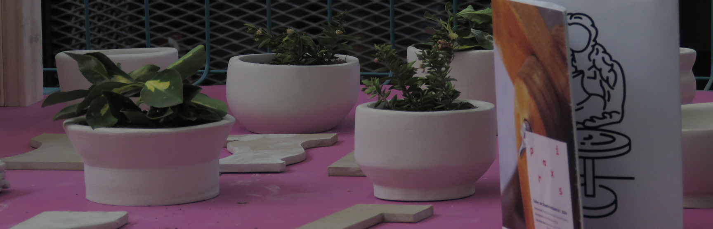
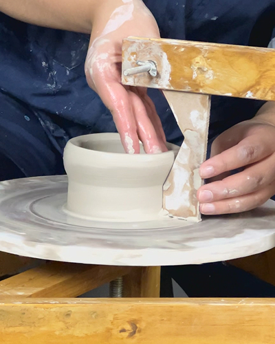
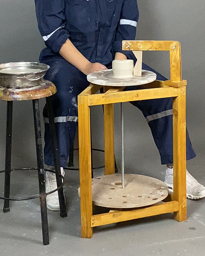
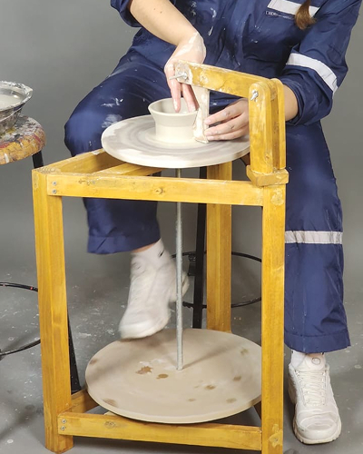
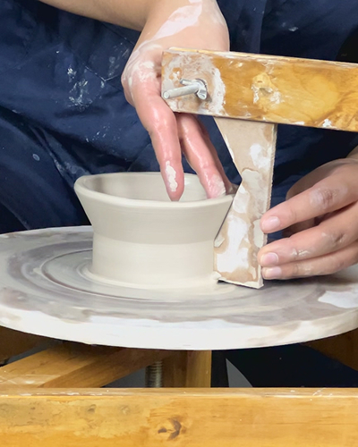

04 . Oficio cerámico
Diseño y fabricación de un torno alfarero de formato compacto pensado para talleres domésticos y espacios reducidos. Su estructura de madera incorpora una guía superior articulada que asiste el centrado y torneado de piezas cerámicas de forma precisa y replicable.
Equipo: Carla Núñez, Narely Riquelme, Antonia Loch.



